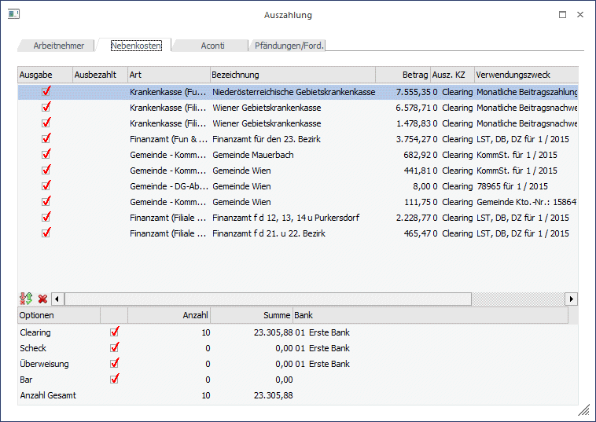
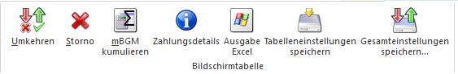
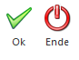

Im Register Nebenkosten können die Lohnnebenkosten (Krankenkasse, Finanzamt, Gemeinde) an die entsprechenden Stellen ausgezahlt werden. Voraussetzung dafür ist, dass im Betriebsstamm die Empfänger-Stämme der jeweiligen Stellen angelegt wurden. Dabei ist zu beachten, dass auch die BLZ und die Kontonummer entsprechend hinterlegt wurden. Die Bildung der Daten für die Auszahlung erfolgt über den Menüpunkt
1 Abschluss
1 Auswertung der Abrechnung
durch Aktivieren der jeweiligen Checkboxen "Zur Zahlung freigeben".

In der Tabelle wird pro Betriebsstamm, der auch in der Abrechnung verwendet wird, der entsprechende Datensatz mit dem dazugehörigen Betrag angezeigt. Zu den einzelnen Feldern in der Tabelle:
Ø Ausgabe
Durch Aktivieren der Checkbox wird entschieden, ob eine Auszahlung vorgenommen werden soll oder nicht.
Ø Ausbezahlt
In diesem Feld wird das Datum der letzten Auszahlung angezeigt. Ist dieses Feld gefüllt, wird die Checkbox "Ausgabe" automatisch deaktiviert.
Ø Art
Es wird angezeigt, um welche Art von Auszahlung es sich handelt. Dabei wird zwischen Krankenkasse, Finanzamt und Gemeinde unterschieden. In Klammer wird der Betrieb angezeigt, für den die Auszahlung erstellt wurde.
Ø Bezeichnung
Hier wird die bezugsempfangende Stelle angezeigt.
Ø Betrag
In dieser Spalte wird der Auszahlungsbetrag ausgewiesen.
Ø Ausz. KZ
In diesem Feld wird das Auszahlungs-Kennzeichen, das im Empfänger-Stamm hinterlegt werden kann, vorgeschlagen. Das Kennzeichen kann aber in der Tabelle noch übersteuert werden, wobei hier nur die Optionen "Clearing" und "Überweisung" zur Verfügung stehen.
Ø Verwendungszweck
In dieser Spalte wird der Verwendungszweck angezeigt, der bei der Überweisung verwendet wird. Der Verwendungszweck setzt sich auch den entsprechenden Informationen bzw. Einstellungen aus dem Empfängerstamm und der aktuellen Abrechnungsperiode zusammen. Ist z.B. im Empfängerstamm des Finanzamtes kein Verwendungszweck hinterlegt, dann wird standardmäßig die Steuernummer verwendet.
Tabellenbuttons:

Ø Umkehren
Durch Anklicken des Umkehr-Buttons kann die Selektion in das Gegenteil gekehrt werden. Beispiel: Standardmäßig werden alle Datensätze zur Auszahlung vorgeschlagen. Wenn nun nur eine Auszahlung an ein FA durchgeführt werden soll, so müssten alle anderen Datensätze deaktiviert werden. In diesem Fall wird aber nur der eine Datensatz deaktiviert und durch Anklicken des Umkehr-Buttons ist dann nur mehr der eine Datensatz aktiv - alle anderen wurden deaktiviert.
Ø Storno
Durch Anklicken des Storno-Buttons können alle bereits ausgezahlten Auszahlungen zurückgesetzt werden. Damit können Zahlungen erneut durchgeführt werden, ohne dass bei allen Datensätzen die Checkbox verändert werden muss.
Ø mBGM kumulieren
Für die Überweisung von Zahlungen an die Krankenkasse, kann zusätzlich der mBGM kumulieren Button gedrückt werden. Dies bewirkt, dass bei der Zahlung etwaige Gutschriften durch Rollungen in die Vergangenheit, berücksichtigt werden können.
Ø Zahlungsdetails
Wird der Zahlungsdetails Button gedrückt, öffnen sich in einem zusätzlichen Fenster jene Meldungen, die zu dieser Zahlungszeile geführt haben (zB wird bei einer Zahlungszeile an die Krankenkasse der dazugehörige mBGM angezeigt).
Ø Ausgabe Excel
Durch Anwahl des Buttons "Ausgabe Excel" wird der Inhalt der Tabelle nach Microsoft Excel übergeben.
Ø Tabelleneinstellungen speichern
Die Spalten einer Tabelle können grundsätzlich an beliebige Positionen verschoben, bzw. in der Breite entsprechend angepasst werden. Durch Anwahl des Buttons "Tabelleneinstellungen speichern" werden die Einstellungen benutzerspezifisch gespeichert und bei dem nächsten Aufruf des Programmpunktes wieder vorgeschlagen.
Ø Gesamteinstellungen speichern
Im Gegensatz zu "Tabelleneinstellungen speichern" können mit "Gesamteinstellungen speichern" mehrere Tabellenaufbauten gespeichert und nach Wunsch geladen werden. Zusätzlich werden Sonderfunktionen der Tabelle (z.B. "Spalte gruppieren") ebenfalls bei der Speicherung bedacht.
Buttons

Ø Ok
Mit Hilfe des "OK" Buttons oder der Taste F5 wird die Auszahlung durchgeführt
Ø Ende
Mit Hilfe des "Ende" Buttons oder der Taste ESC wird das Fenster geschlossen
Unterhalb der Tabelle kann über die verschiedenen Checkboxen gesteuert werden, welche Auszahlungen durchgeführt werden sollen. Dabei sind die Optionen
ü Clearing
ü Scheck
ü Überweisung
ü Bar
vorgesehen, wobei bei den Nebenkosten nur Werte bei Clearing und Überweisung aufscheinen können.
Achtung:
Bei der Ausgabe auf Clearing werden die Clearingdaten in den FIBU-Mandanten gestellt, der in den Betriebsdaten hinterlegt wurde. Sollten einmal nach der Auszahlung keine Clearingdaten vorhanden sein, so muss die Einstellung des FIBU-Mandanten in den Betriebsdaten überprüft werden.
Darunter wird die Anzahl der für jede Auszahlungsart aktivierten Datensätze sowie der Gesamtbetrag ausgewiesen. Zusätzlich dazu wird noch die Gesamtsumme der Auszahlungsbeträge angezeigt (bezogen auf die in der Tabelle befindlichen Datensätze).
Im Eingabefeld
Ø Bank
kann aus der Auswahllistbox die gewünschte Bank, von der die Auszahlung durchgeführt werden soll, ausgewählt werden. Diese Auswahl hat aber keine Auswirkung auf eine Buchung für die WinLine FIBU.
Durch Drücken der F5-Taste wird die Ausgabe gestartet, wobei entsprechend der Einstellungen alle Optionen durchgeführt werden. Durch Drücken der ESC-Taste wird das Fenster wieder geschlossen.
Für die Optionen Clearing, Bar und Scheck bzw. Überweisung wird jeweils ein eigenes Ausgabeprotokoll gedruckt, wo die einzelnen AN, der Auszahlungsbetrag und die Summe der Auszahlungsbeträge angeführt werden.
Wie kann man eine Auszahlung wiederholen?
Pro Abrechnung wird gemerkt, ob diese bereits ausgezahlt wurde oder nicht. Standardmäßig werden bei der Auszahlung nur jene Datensätze vorgeschlagen, die hier noch nicht bearbeitet wurden.
Die Datensätze werden trotzdem angezeigt - und zwar mit dem Datum, an dem die Auszahlung erfolgte. Durch Aktivieren der Checkbox
Ø Ausgabe
in der ersten Spalte der Tabelle kann die Auszahlung nochmals durchgeführt werden. Alternativ dazu können die Datensätze nochmals markiert werden - durch Anklicken des Storno-Buttons kann dann die Ausgabe für die markierten Datensätze zurückgesetzt werden. Im Anschluss kann dann die Auszahlung wiederholt werden.